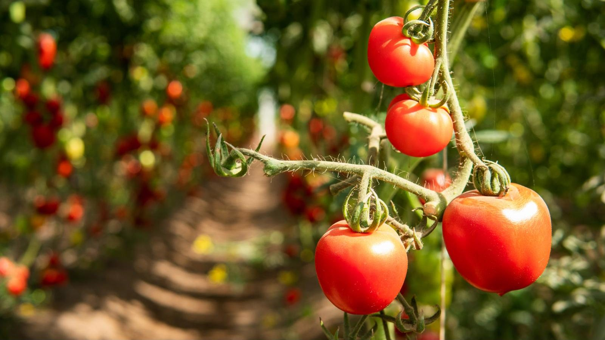

Your Reliable Partner for Coconut-Based Products
Growing a Greener Future
Company Profile & Products

Your Reliable Partner for Coconut-Based Products
Company Profile & Products
Origen Coco supplies a comprehensive range of coconut-based products to growers, importers, distributors and industrial buyers. Backed by approximately 10 years of experience supplying the Indian market, we combine farmer-direct sourcing, careful product preparation and a customer-focused approach to serving domestic and international markets.
We understand that successful supply partnerships depend on more than the product itself. Consistent specifications, competitive commercial terms, clear communication and dependable shipment planning are central to the way we aim to do business.

Origen Coco began with a simple thought: there should be a use for every part of a coconut.
There is much more to a coconut than the part we eat. The husk gives us fibre, pith, and chips, while the kernel can be dried to make copra. For years, some of these parts were discarded or sold for very little. We saw an opportunity to use them better, create useful products, and give local farmers a more dependable market for what they grow.
Around ten years ago, we began supplying coco peat blocks, coco husk chips, copra, coconut fibre, and coconuts across India. The business grew gradually, one order and one customer at a time. Many came back because they knew they could expect consistent products, reliable supply, and someone to speak to when they had a question.
Today, we supply growers, nurseries, and industries in overseas markets too. We carefully manage sourcing and processing, test our products, and align product preparation and quality checks with agreed buyer specifications. As the business has grown, the things that matter to us have stayed much the same: clear product information, straightforward communication, and reliable delivery.
Our aim is to become an internationally recognised brand in the coconut product industry. To us, this means being able to provide high-quality products that are consistent, professional services that simplify the process of international trade, and a greener future where natural products and renewable resources rule the industry.
Our mission is to provide high-quality coco peat and coco husk chips, quality copra, coconut fibre, and coconuts according to international standards. To achieve this goal, we make efforts to source products responsibly by procuring them from local farmers and applying a tested system of farming and production to guarantee timely deliveries to our clients.

Our coconuts are sourced directly from local farmers, and this means that the process is completely free of intermediaries. This one-on-one relationship with growers allows us to check quality on site, provide a fair price, and ensure reliable supply. The farmers also benefit because they take a share of the value we build from what they grow.
We connect responsible sourcing and practical product expertise with the commercial needs of growers, distributors, importers and industrial buyers.
We focus on product preparation, grading and quality checks appropriate to each product. Our aim is to supply products that meet agreed specifications and support consistent results for your operation.
Our farmer-direct sourcing model connects us with local growers and provides greater visibility over our raw materials. These relationships help us coordinate sourcing and support continuity of supply.
We work with buyers to understand their volume, grade, packaging and destination requirements so that quotations reflect the actual needs of each order. Our focus is on delivering strong overall value, not price alone.
We recognise the importance of meeting agreed timelines. We aim to coordinate sourcing, processing, packing and dispatch carefully, with clear communication throughout the order cycle.
From initial enquiry to shipment coordination, we aim to provide timely responses, clear product information and practical support so buyers can plan and manage their orders with confidence.

We use every part of the coconut. The husk is used for making coco peat, husk chips, and fibre, the kernel is processed into copra, and mature coconuts are sold whole.
Our range has two groups. Growing media, which includes coco peat blocks and coco husk chips, for growers, nurseries and potting mix makers. We have coconut products, like Coconut fibre, copra and coconuts, for industry, processors and retail.
Washed, dried, and compressed coir pith that expands into a light, moisture-holding growing medium.
Suitable crops
Coco peat is the fine, spongy pith left when coconut husk is separated into fibre. It is a natural, renewable alternative to peat moss that holds plenty of water without turning heavy or waterlogged.
At Origen Coco, we wash the pith to lower its salt content, dry it to the right moisture level, and press it into compact blocks that are easy to store, stack, and ship. Add water, and the block expands into a light, fluffy growing medium for bags, pots, trays and nursery mixes. Its compact form also makes it easier and more cost-effective to transport than loose coco peat.
| Item | Details |
|---|---|
| Block types | To be confirmed |
| Grades | To be confirmed |
| Packing | To be confirmed |
| Container loading | To be confirmed |
| Custom options | To be confirmed |
| Parameter | Value |
|---|---|
| Electrical conductivity (EC) | To be confirmed |
| pH | To be confirmed |
| Moisture content | To be confirmed |
| Block weight | To be confirmed |
| Compressed dimensions | To be confirmed |
| Expansion volume | To be confirmed |
| Sand/fibre/impurities | To be confirmed |
Diced husk pieces that keep roots well aerated and drain freely.

Coco husk chips are small pieces of coconut husk. They differ from coco peat, as they create a different planting medium that has more air pockets and drains excess water more effectively. This makes them a suitable choice for those plants that do best if their roots have air circulating around them.
Typically, growers use coco husk chips for growing orchids or combine them with coco peat. A grower can select the size of the chips, depending on the plant and container.
| Item | Details |
|---|---|
| Chip sizes | To be confirmed |
| Forms | To be confirmed |
| Packing | To be confirmed |
| Container loading | To be confirmed |
| Parameter | Value |
|---|---|
| Chip size | To be confirmed |
| EC | To be confirmed |
| pH | To be confirmed |
| Moisture content | To be confirmed |
| Weight per unit | To be confirmed |
Strong, natural fibre from the husk for industrial use.

Coconut fibre is the long, strong strand found inside the husk. It is tough, resistant to wear and fully natural. We take the same husk that gives us coco peat, separate the fibre from the pith, clean it, and press it into bales that are simple to handle and ship.
Buyers turn it into mats, rope and brushes, erosion-control nets, garden products and upholstery filling, often in place of synthetic fibres. If you need a particular length, grade, or bale size, we can discuss what is possible for your order.
| Item | Details |
|---|---|
| Grades | To be confirmed |
| Packing | To be confirmed |
| Container loading | To be confirmed |
| Parameter | Value |
|---|---|
| Fibre length | To be confirmed |
| Moisture content | To be confirmed |
| Impurities | To be confirmed |
Dried coconut kernel, sorted and packed for processing.

Copra is the dried kernel of the coconut and the main raw material for coconut oil. Its quality depends on the coconuts and proper drying of copra, which we closely monitor.
We buy mature coconuts from local farmers, extract and dry the copra, and then sort and pack it for dispatch. Oil mills and food manufacturers require clean, well-dried copra with consistent qualities from batch to batch. Since we procure directly from the growers, we are able to trace back every batch of copra to its source.
| Item | Details |
|---|---|
| Grades | To be confirmed |
| Packing | To be confirmed |
| Container loading | To be confirmed |
| Parameter | Value |
|---|---|
| Moisture content | To be confirmed |
| Oil content | To be confirmed |
| Free fatty acid | To be confirmed |
| Impurities | To be confirmed |
Mature coconuts from local farms, graded and packed for shipping.
Our coconuts are mature nuts from local farms, bought directly from the growers. At our unit, we grade them by size and quality so that each lot is even and easy to sell, which matters to buyers because it affects pricing, processing, and presentation. We pack the nuts to travel well over long distances.
Customers use them for wholesale and retail sales, food processing, and cooking in homes and restaurants. If you have a size range or packing method in mind, let us know.
| Item | Details |
|---|---|
| Types | To be confirmed |
| Sizes | To be confirmed |
| Packing | To be confirmed |
| Container loading | To be confirmed |
| Parameter | Value |
|---|---|
| Size grading | To be confirmed |
| Average weight | To be confirmed |
| Shelf life | To be confirmed |
| Parameter | Value |
|---|---|
| Electrical conductivity (EC) | To be confirmed |
| pH | To be confirmed |
| Moisture content | To be confirmed |
| Block weight | To be confirmed |
| Compressed dimensions | To be confirmed |
| Expansion volume | To be confirmed |
| Sand/fibre/impurities | To be confirmed |
| Parameter | Value |
|---|---|
| Chip size | To be confirmed |
| EC | To be confirmed |
| pH | To be confirmed |
| Moisture content | To be confirmed |
| Weight per unit | To be confirmed |
| Parameter | Value |
|---|---|
| Fibre length | To be confirmed |
| Moisture content | To be confirmed |
| Impurities | To be confirmed |
| Parameter | Value |
|---|---|
| Moisture content | To be confirmed |
| Oil content | To be confirmed |
| Free fatty acid | To be confirmed |
| Impurities | To be confirmed |
| Parameter | Value |
|---|---|
| Size grading | To be confirmed |
| Average weight | To be confirmed |
| Shelf life | To be confirmed |
It varies by the block’s dimensions and quality. A dried block expands considerably when it soaks up the moisture, and the expansion capacity can be checked on the specification table. Tell us the dimensions of your blocks, and we can assist you with the calculation of the number of blocks you will require.
A structured process from sourcing and production to quality checks and shipment. The steps vary by product, but the focus remains on consistent quality and careful handling at every stage.
01We buy coconuts and husks directly from local growers. Each lot is checked for quality when it arrives, and anything that does not meet our standards is set aside.
02The husk is separated into fibre, pith, and chips. The pith and chips are then sieved to the required size, while oversized pieces and unwanted material are removed.
03The pith is washed with clean water to reduce its salt content. We check the EC and pH before it moves on to make sure it is suitable for growing applications.
The washed material is dried to the required moisture level and turned during the process so it dries evenly. Moisture is checked before the material moves to the next stage.
05The dried peat is pressed into blocks according to the required size and weight. The blocks are then packed, stacked, and secured on pallets for storage and transport.
 06
06Samples are checked against the product specifications, including EC, pH, moisture, and block weight. Only batches that meet the requirements are cleared for dispatch, with records kept for traceability.
The finished pallets are loaded into containers and secured for transport. Shipments travel by road and sea, and customers are kept informed about dispatch and delivery.
Copra follows its own process, from the coconut on the farm to the bag in the container. Here is how we prepare it.
01We source mature coconuts directly from local growers and check them for quality when they arrive. Buying from farmers also allows us to trace each lot back to its source.
02The kernel is removed from the shell and dried to the required moisture level. Careful drying helps prevent mould and spoilage, and the moisture is checked before the copra moves on.
The dried copra is checked and graded, with pieces that do not meet our standards removed. It is then packed in bags to protect it from moisture before being prepared for shipment.
Whole coconuts are graded and packed with the same care. Here is how we handle them from the farm to the container.
01We source mature coconuts directly from local growers and check them when they arrive. Damaged or immature nuts are set aside before the coconuts move to grading.
02The coconuts are sorted by size and quality to keep each lot consistent. Buyers can specify the size range that best suits their market, and the graded nuts are checked again before packing.
The coconuts are packed to help prevent damage during transit and checked before leaving our unit. They are then loaded securely for transport by road and sea.
Whether you are sourcing coconut-based growing media, raw materials or bulk coconut products, our team is ready to discuss your specifications, volumes, packaging and destination requirements. Contact us for product information and a tailored quotation.
Share your specifications, volume and destination for a tailored supply proposal.